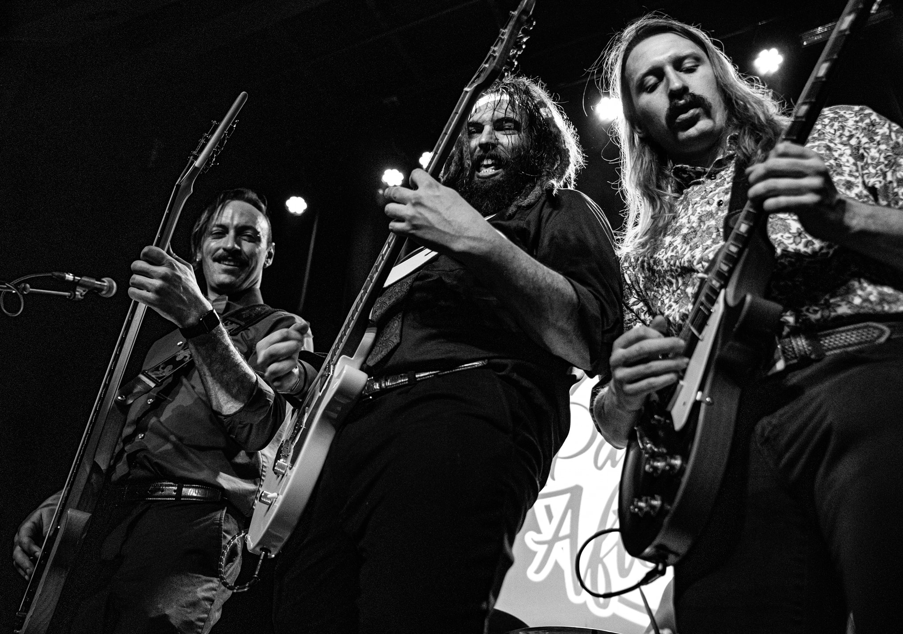
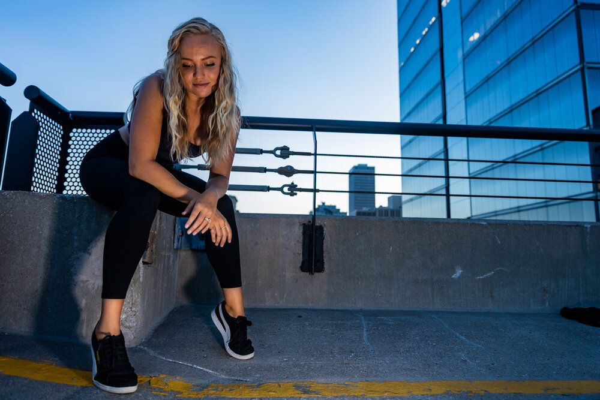
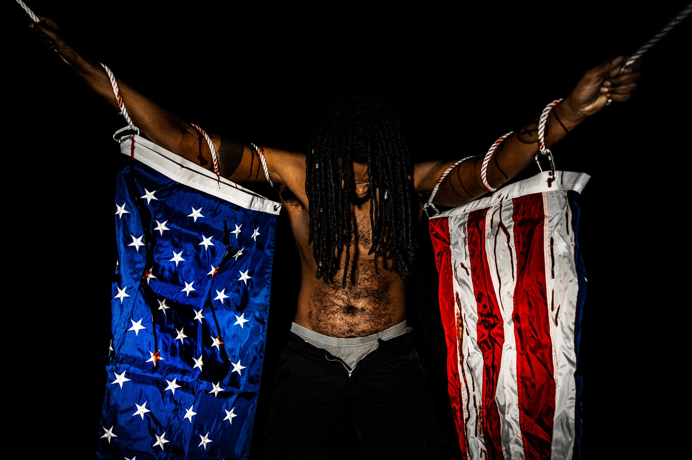

Seth Jones
Home
About Me
My Work
Constellations
Art with a Message
Landscapes
Contact Me

The Party After w/Sam Hayes of Gallivant

Jana Stone | Fitness Model and Owner of The Metals Bar

“Blood and Foundations” | Jordan Maxwell Corbin